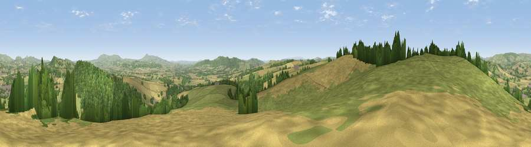

Viewpoint near Stokesay
#3324 in England · top 8% of its area beats it · near StokesayThe view, rendered

A 360° render of this exact spot computed from the terrain model, tree cover and land cover — summer colours, afternoon light, calibrated against photographs of famous viewpoints. Real trees, hedges and buildings will differ in detail.
The panorama
Grey silhouette: terrain skyline in each direction (720 bearings, Earth curvature and refraction included). Dashed green: skyline with trees (+15 m) and buildings (+8 m) as obstacles. Blue strip: how far the ground is visible on each bearing.
Where the view opens
Wedge length = distance to the farthest visible ground on that bearing (vegetation-aware). Rings at 10, 25 and 50 km.
What fills the view
43% grassland · 32% cropland · 24% woodland · 1% built-up
Angular shares of the visible panorama (visual magnitude), not map area. Landscape diversity 0.49 (0–1 Shannon).
Key numbers
More beautiful places nearby
The staircase of upgrades: each row has a higher view potential than everything closer. Driving times are estimates from straight-line distance, calibrated against real road routing — check an actual route before setting out.
| Place | Direction | Drive | Score |
|---|---|---|---|
| Viewpoint near Stokesay | WSW · 0 km | ~2 min | 75.0 |
| Burrow | WNW · 5 km | ~12 min | 79.4 |
| Viewpoint near Pipe Aston | SSE · 8 km | ~16 min | 81.9 |
| Bringewood Hill | SSE · 8 km | ~17 min | 82.2 |
| Viewpoint near Asterton | NNW · 9 km | ~17 min | 83.0 |
| Titterstone Clee | E · 17 km | ~29 min | 83.8 |
| The Lawley | NNE · 18 km | ~31 min | 85.8 |
| Viewpoint near Little Wenlock | NE · 34 km | ~52 min | 86.6 |
52.42152, -2.84143 · source: screening · position refined by local search. Computed location — check access rights before visiting.